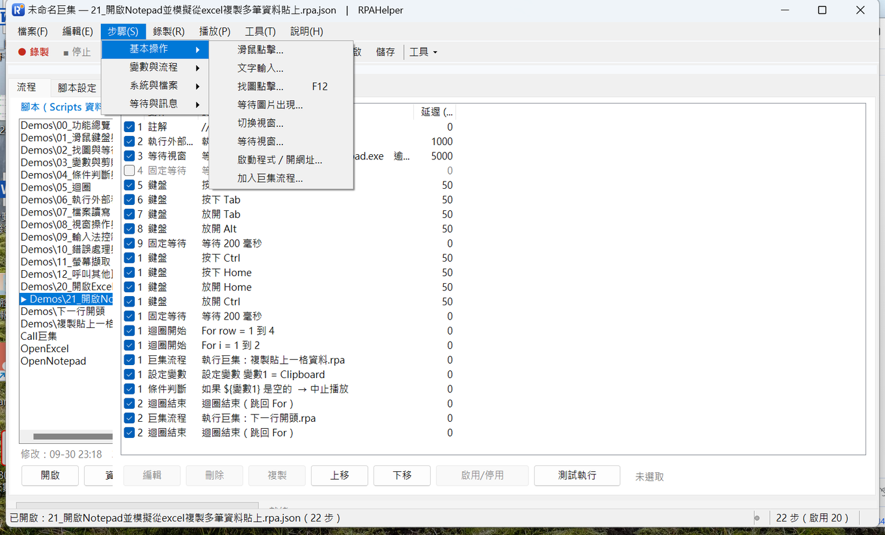

← 回程式設計
← 回影片索引
讓電腦自己動滑鼠、打字，
還會在畫面上找按鈕
基本操作 8 個動作：找圖點擊可以跨程式找到別的程式的按鈕（連開始按鈕都行）
2026/10/01・系列 2／5：基本操作
這一類管的是「手」和「眼睛」：動滑鼠、打鍵盤、在畫面上找東西、把視窗叫出來。
錄製能產生的大部分動作都在這裡，也是整個工具最直覺的部分——
錄一次就能重播，但要它穩定，靠的是下面「等待」與「找圖」這幾個動作。
這一類共 8 個動作：滑鼠點擊／拖曳、文字輸入、找圖點擊、等待圖片出現、切換視窗、等待視窗、
啟動程式或開網址、加入巨集流程。

「步驟」選單的「基本操作」分類。下面挑其中兩個最有價值的講：找圖點擊與等待視窗。
找圖點擊：不必知道座標，找到才按
怎麼用：按 F12（或從選單選「找圖點擊…」），畫面會變暗讓你框選一個目標——
一個按鈕、一個圖示、一段文字都行。播放時它會在畫面裡搜尋這塊目標，找到才點下去，
不是死記上一次錄下來的座標。
它可以跨程式。這是我最常用它、也最想推薦的一點：別的應用程式裡的按鈕、
甚至是 Windows 的「開始」按鈕，它都找得到、按得下去——
不需要知道座標，也不需要那個程式提供任何自動化介面。遇到「只能靠人看著畫面點」的老系統，
這是最省事的一條路。
幾個讓它更穩的設定：
- 限定搜尋區域：只在你框的範圍裡找，快很多，也避免畫面其他地方有長得像的東西時誤點。
- 點擊位置：預設點在樣板中心；需要偏一點就用自訂位移。也支援右鍵與雙擊。
- 容差與重試：設定裡有預設容差與重試次數／間隔；畫面有抗鋸齒或半透明時把它放寬一點。
- 找不到時：逾時可以「跳過」或「中止」。示範腳本裡故意用了畫面上不會出現的假圖，
並設成「跳過」，讓你看到逾時後腳本怎麼繼續。
它會壞掉的幾種情況（先知道省得踩）：
- 解析度、系統縮放、佈景主題或字型改變：目標長相就變了，要重新框選一次。
- 目標程式改版、按鈕搬位置：要找的東西還在，但可能被收進選單或換了圖示——重新框一次就好。
- 目標被別的視窗蓋住：螢幕上找不到它就找不到；所以腳本裡常要先「切換視窗」把它叫到前景。
- 動畫中的按鈕：淡入、位移中的元件，等它停下再找（前面加一個「固定等待」或改用「等待圖片出現」）。
「等待圖片出現」是它的搭擋：找圖點擊是「找到了就點」，等待圖片出現是「等到它出現才繼續」，
常用在「按下送出之後，等結果畫面跑出來」。逾時同樣可以選跳過或中止。
什麼時候該用找圖、什麼時候直接用座標？位置固定、每次都在同一個地方的，用座標最快；
位置會變的（視窗大小會變、清單順序會動、程式的版面會被使用者拉大拉小）就用找圖——
這也是同一支腳本能不能換到別人電腦上跑的关键。
等待視窗：把「等 5 秒」換成「等到它出現」
錄製出來的腳本常常長這樣：點一下、等個幾秒、再點下一個。問題是那幾秒是當下那台電腦需要的時間——
換一台慢一點的機器就不夠，快一點的機器又白白浪費。
「等待視窗」是「等到符合條件的視窗出現才往下走」，比對方式有四種：完全相同／包含關鍵字／
正規式／行程名稱。實務上最常用「行程名稱」（例如等 excel.exe 的視窗出現）或
「包含關鍵字」（例如標題含 Excel）。開得慢它會等、開得快它不會多等。
小提醒：視窗標題會隨檔案變動（未儲存的檔案前面會有 *），所以「標題完全相同」很容易失敗，
用「包含關鍵字」比較保險。
文字輸入、鍵盤與視窗
文字輸入支援中文與多行，換行會自動轉成 Enter；連續打字在錄製時會合併成一個步驟。
少數程式對「直接注入文字」不理會，設定裡可以改成「剪貼簿貼上」或「逐鍵掃描碼」；
中文輸入法干擾的話，有一個「播放前自動切換輸入法為英文」的選項。
鍵盤按鍵含方向鍵這類延伸鍵；組合鍵（例如 Ctrl+Shift+End）就是按下、放開的序列。
切換視窗把目標視窗叫到前景（常常是「找圖或點擊之前」要先做的一步）；
啟動程式 / 開網址可以開執行檔、文件、資料夾或網址。
加入巨集流程：把做過的事變成積木
「加入巨集流程」是把另一支腳本當成一個步驟來執行：可以設定它自己的重複次數與速度，
路徑存成相對於 Scripts 資料夾（整包複製到別台電腦也能用）。
它和變數是連在一起的：被呼叫的子腳本用的是同一份變數，
所以主流程先設好的值，子腳本直接就能用；子腳本自己宣告的初始變數也會併進來，呼叫端要覆寫也可以。
同一支子巨集就能給很多支主流程重複使用——換掉參數就是另一件事，不必複製整份腳本。
（這是「變數與流程」那篇會講的細節。）
影片：實際執行錄影，看得到程式自己跑
這支影片示範的是上面哪一段：這支影片只示範「啟動程式 → 輸入文字 → 全選複製 → 存成變數」這條最基本的路線。
| 影片裡看到的步驟 | 說明 |
|---|
| 啟動 notepad.exe | 腳本自己去啟動程式，你不用先手動開。 |
| 等待「記事本」視窗出現 | 等視窗真的跑出來才往下走，不是硬等固定秒數。 |
| 程式自己輸入這段文字 | 中文也沒問題，而且換成任何一段文字都行。 |
| Ctrl+A 全選、Ctrl+C 複製 | 用鍵盤步驟把選到的內容放進剪貼簿。 |
| 複製到的內容存成一個變數 | 存成變數之後，後面的步驟隨時可以再拿出來用。 |
這支影片沒有示範的（文章有講、影片沒帶）：- 找圖點擊（跨程式找按鈕）
- 滑鼠移動、點擊、滾輪
- 等待視窗關閉、等待程序結束
- 呼叫其他巨集
看不方便的話，也可以 直接在 YouTube 看。這支是 RPAHelper 的實際執行錄影：畫面上看得到工具視窗和動作清單，程式自己跑完，全程沒有人碰鍵盤滑鼠；程式跳出的訊息視窗也一起入鏡，訊息裡的內容是變數真正代入後的值，工具視窗以外的畫面都已經塗黑。
對應的示範腳本（工具內建）：01 滑鼠鍵盤與文字、02 找圖與等待影像。 每支都用註解步驟寫清楚在做什麼，可以開啟來對照本文。但影片裡跑的是另一份：示範副本放在 Scripts\Demo_影片\，內容跟這幾支相同，只是把播放速度調慢一點、每個步驟之間多停一下，方便看清楚程式在做什麼。你要自己試，直接用工具內建的那幾支就可以。
本文是工具實作與流程的記錄，不構成任何軟體或服務的推薦。
頁面上的畫面都是實際操作時擷取，未經合成。